import os import sys import module_DeleteProject import module_CreateProject import module_CreatePolygonInTexas import module_CommonImagesSet nameOfProject = "Test Multiple Polygons" # First delete existing project if any. module_DeleteProject.deleteProject(nameOfProject) # Create new project. module_CreateProject.createProject(nameOfProject) # Create first polygon somewhere in Texas. module_CreatePolygonInTexas.createPolygonInTexas() type(Key.ESC + Key.ESC) # Check the properties. click(Pattern(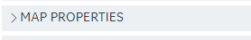).similar(0.81).targetOffset(-123,-1)) wait(1) valueInSquareMeterDropdown = Pattern(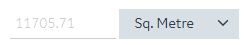).targetOffset(36,1) exists(valueInSquareMeterDropdown) # check meter feet works or not. click(valueInSquareMeterDropdown) click(Pattern(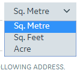).targetOffset(1,0)) exists(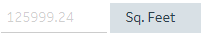) # check location. exists(Pattern(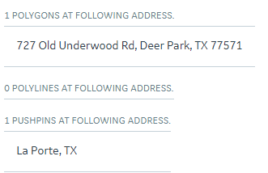).targetOffset(1,0)) # Draw second polygon. click(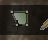) click(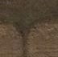) click(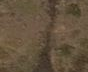) click(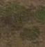) click(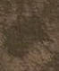) click() wait(1) type(Key.ESC) exists(Pattern(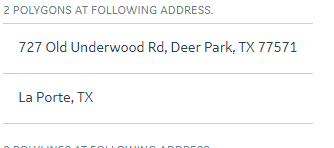).similar(0.88).targetOffset(1,0)) # close the project. module_CommonImagesSet.closeProject() wait(1) # Delete the project. module_DeleteProject.deleteProject(nameOfProject) Debug.log("TEST PASSED!!")